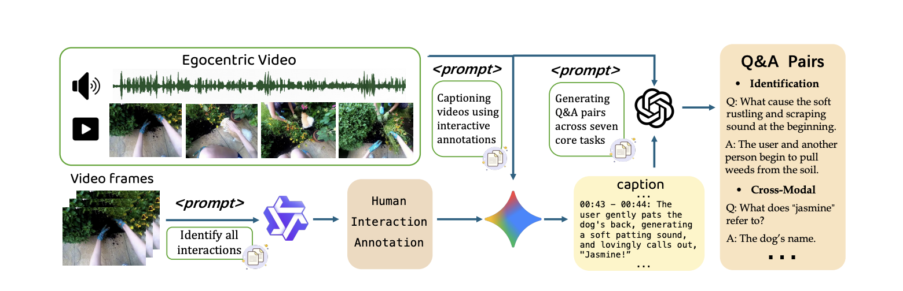
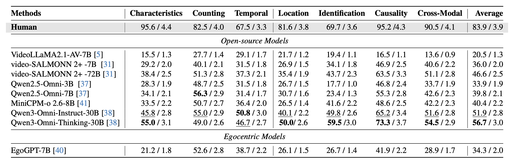

Spatial Location (Direction & Distance)
Question: From where relative to the camera did the woman's voice originate?
Answer: From the front-left.

1Fudan University 2Shanghai Innovation Institute 3INSAIT 4Nankai University 5East China Normal University
A comprehensive audio-visual QA dataset tailored for sound understanding.
EgoSound contains 7315 validated QA pairs across 900
videos, covering intrinsic sound perception, spatial reasoning, causal inference, and
cross-modal understanding.
We introduce EgoSound, the first benchmark that systematically evaluates sound understanding in egocentric videos for multimodal large language models (MLLMs). It covers both environmental sounds from human–object interactions and human dialogues that drive contextual understanding, enabling models that can hear, not just see, from a first-person viewpoint.
EgoSound integrates videos from the large-scale Ego4D dataset and the EgoBlind dataset, and defines seven task families: sound characteristics, counting, temporal attributes, spatial localization, sound source identification, inferential causality, and cross-modal reasoning. Through a rigorous multi-stage curation pipeline leveraging modern generative models (Qwen2.5-VL, Gemini-2.5, GPT-4o), we obtain 7,315 validated open-ended QA pairs over 900 carefully filtered videos.
We evaluate eight state-of-the-art MLLMs, including Qwen-Omni, video-SALMONN 2+, VideoLLaMA 2.1, MiniCPM, and the egocentric-specialized EgoGPT. Despite emerging auditory reasoning abilities, current models still struggle with fine-grained spatial, temporal, and causal inference based on sound.
Question: From where relative to the camera did the woman's voice originate?
Answer: From the front-left.
Question: What are the acoustic qualities and duration of the scratching sound made while drawing the line at 00:36–00:40?
Answer: A continuous, distinct scratching that lasts about 4 seconds.
Question: How many numbers did the female voice count between 00:22 and 00:26, and what were they?
Answer: Six numbers: 5, 6, 7, 8, 9, and 11.
Question:Did the cane fall occur before, during, or after the male's statement?
Answer: During—-it happened simultaneously with his statement.

Human interaction annotation. In the first stage, we annotate temporally grounded human–object interaction moments that are likely to produce sound. These structured interaction labels provide rich context and are used as conditioning prompts to guide the next stage of caption generation.
Audio–visual caption generation. In the second stage, we use Gemini-2.5 to generate sound-centered audio–visual captions, conditioned on the interaction labels. For each interaction, the model describes the sound source, its acoustic traits, how many sources are active, when and how long it occurs, where it is in space, why it happens, and how visual context explains the audio.
Q&A pairs construction. In the final stage, GPT-4o generates meaningful Q&A pairs from the detailed captions and corresponding video frames. Each pair must be visually supported by the clip to ensure factual consistency between sound descriptions and the underlying video evidence.

We evaluate EgoSound on a range of state-of-the-art MLLMs that jointly process audio and video, and compare them with human performance. Our experiments reveal that egocentric sound understanding remains a formidable challenge for current multimodal models, despite their strong progress in vision-language integration.
EgoCross dataset is now available on Hugging Face. Access the complete benchmark with all domains and QA pairs.
If you find EgoSound useful in your research, please cite :
@inproceedings{zhu2026egosound,
title={EgoSound: Benchmarking Sound Understanding in Egocentric Videos},
author={Zhu, Bingwen and Fu, Yuqian and Dong, Qiaole and Sun, Guolei and Qian, Tianwen and Wu, Yuzheng and Paudel, Danda Pani and Xue, Xiangyang and Fu, Yanwei},
booktitle={Proceedings of the IEEE/CVF Conference on Computer Vision and Pattern Recognition (CVPR)},
year={2026}
}